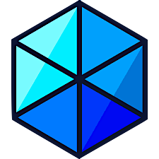
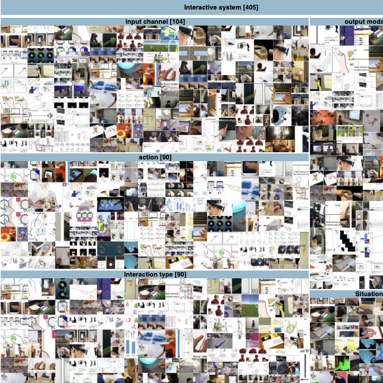
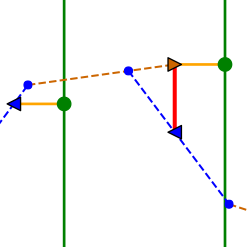
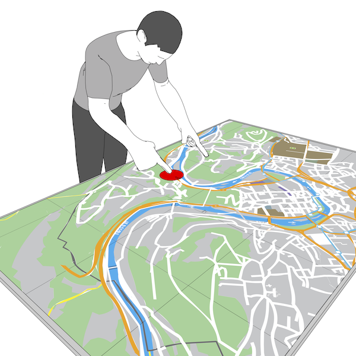
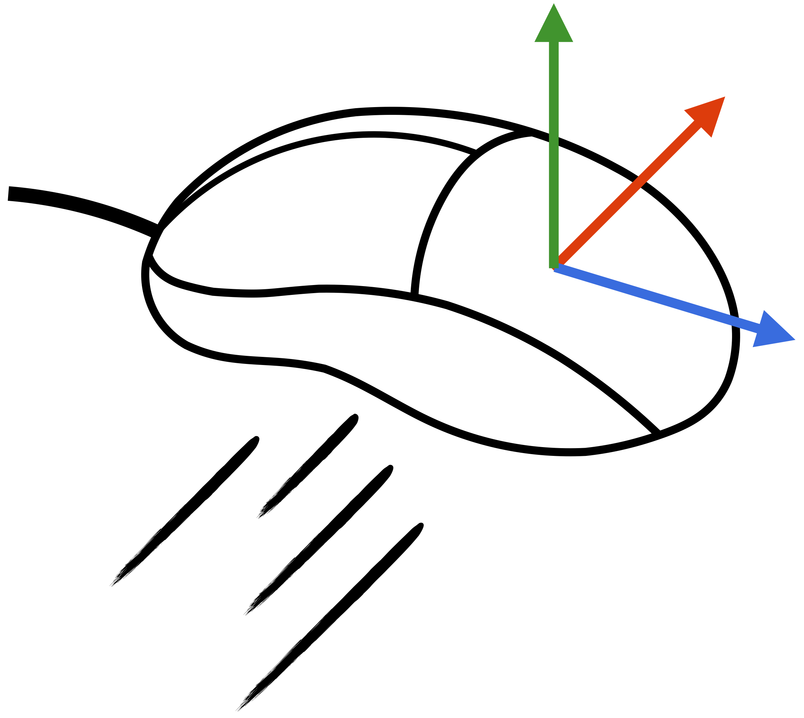
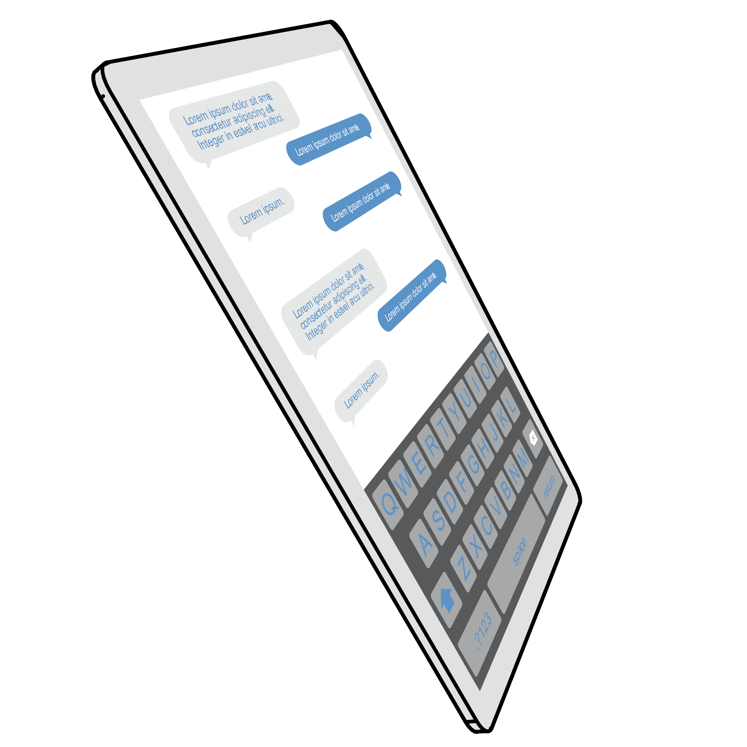
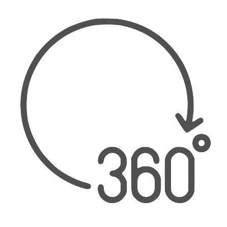
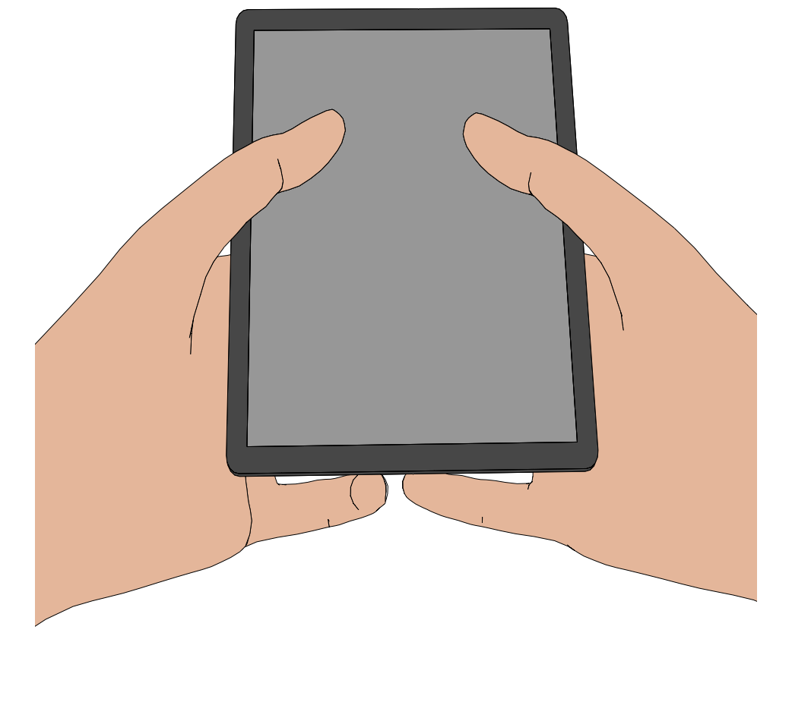
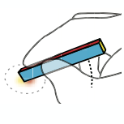

Projects
Major Projects

Esquisse++
2021 - current, 2 years. Research Software Engineer, Loki team, University of Lille, Inria Lille Nord Europe, Villeneuve-d'Ascq, France
This project aims to develop a new version of the Blender add-on Esquisse created during my PhD for the web using Typescript and Three.js. This project involves creating a vector-based render engine from scratch.
[C++, Typescript, Node.js, Three.js, React, Emscripten]

Interaction Illustration Taxonomy
2020, PhD 2nd year. PhD, Loki team, University of Lille, Inria Lille Nord Europe, Villeneuve-d'Ascq, France
This project proposes a new taxonomy of figures representing interaction scenarios and provides a concise synthesis of visual strategies used to create them. We also provide three online open-source softwares facilitating the exploration of the created dataset, available on github. See publication for details.
[python, javascript, bootstrap, R]

Spatial Jitter compensation in Chromium
2019, 14 weeks. Software Engineer Intern, Chrome, Input Dev team, Google, Kitchener, ON, Canada
Design, implementation and evaluation of a spatial jitter technique caused by asynchronous input and output rates experimented on displays with 90Hz and more. The project required to compensate for the jitter in real time for specific devices (e.g. Pixel 4) using input events resampling without impacting performance and precision. The technique is actually implemented and used in Chrome for Android. See publication for details.
[C++, R]

Esquisse
2018, PhD 1st year. PhD, Loki team, University of Lille, Inria Lille Nord Europe, Villeneuve-d'Ascq, France
Design, implementation and evaluation of 3D staging techniques to facilitate the production of vector-based illustrations. Esquisse is developped as a Blender add-on, proposing 3D interaction techniques to ease the manipulation of 3D objects and embeds an innovative vector-based NPR rendering engine based on state of the art rendering techniques. See publication for details.
[Blender, python, C++, CGAL Library, R]

TurboMouse
2017, 6 months. Master's Degree internship, Mjolnir team, Inria Lille Nord Europe, Villeneuve-d'Ascq, France
Design, implementation and evaluation of a latency compensation technique on desktop computers using a high frequency accelerometer embedded in the mouse. This project required specific optimizations to synchronize multiple input sources streams and compute trajectory predictions in real-time. See publication for details.
[C++, Qt Framework, Arduino, R]
ForceEdge
2016, 3 months. Master's Degree internship, Mjolnir team, Inria Lille Nord Europe, Villeneuve-d’Ascq, France
Design, implementation and evaluation of autoscroll interaction techniques on both desktop and touch-based force sensitive devices. This project required to design a cross-platform technique deliver the same user experience on both desktop and mobiles force-sensitive input surfaces. See publication for details.
[Objective-C, iOS, macOS, R]
Minor projects

HandSketch: Vectorial draw creation from 3D scene tool.
2017, 3 months. Master's Degree Project, University of Lille
Tool allowing the easy creation of a SVG (vectorial) file from a Blender 3D scene. User can choose visual rendering strokes (based on Blender.Freestyle) and add additionnal vectorial information from external files.
[python, Blender]

360 Video player
2016, 1 week. Master's Degree Project, University of Lille
Implementation of a 360 video player in a Web browser using WebGL 2.0.
[javascript, WebGL]

Virtual Reality Navigation Technique
2016, 2 months. Master's Degree Project, University of Lille
Implementation of a virtual reality navigation technique in Unity3D with Occulus Rift using the iPhone 6S inboard gyroscope for orientation control and the force sensitive touchscreen for speed control.
[C#, Unity]

Conté: Multimodal Input Inspired by an Artist's Crayon
2014, 3 months. Technology Degree Project, University of Lille
This project aims to associate different functionnalities to each side of an external pen (e.g. Conté pen) in contact with a touch screen using a resistive sensor.
[C++, Qt Framework]